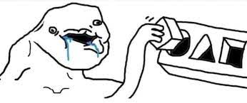

Boyfriend Dungeon is the ABSOLUTE BEST GAME IN THE WORLD, and it makes me SO DAMN ANGRY that people just don't seem to get it! It's the perfect combination of dungeon crawling and dating sims, and the combat mechanics are out of this world! But no, all these haters just have to go and insult it, calling it "cringe" or "weird" or "not their thing," when they clearly have no idea what they're talking about! The characters are so HOT, and dating a sword or a dagger is just so damn amazing that it makes me want to scream! The conversations are so MEANINGFUL, and the combat mechanics are just INSANELY GOOD, but no, these ignorant fools just can't seem to appreciate a masterpiece when they see it! Upgrading weapons and abilities makes you feel like an UNSTOPPABLE FORCE, and this game deserves so much more RECOGNITION! Fighting through dungeons with a hot weapon by your side is the most THRILLING experience you'll ever have, and falling in love with someone who's also a sword is just pure BLISS! And anyone who disagrees with me can just GO TO HELL! Boyfriend Dungeon is a MASTERPIECE,
